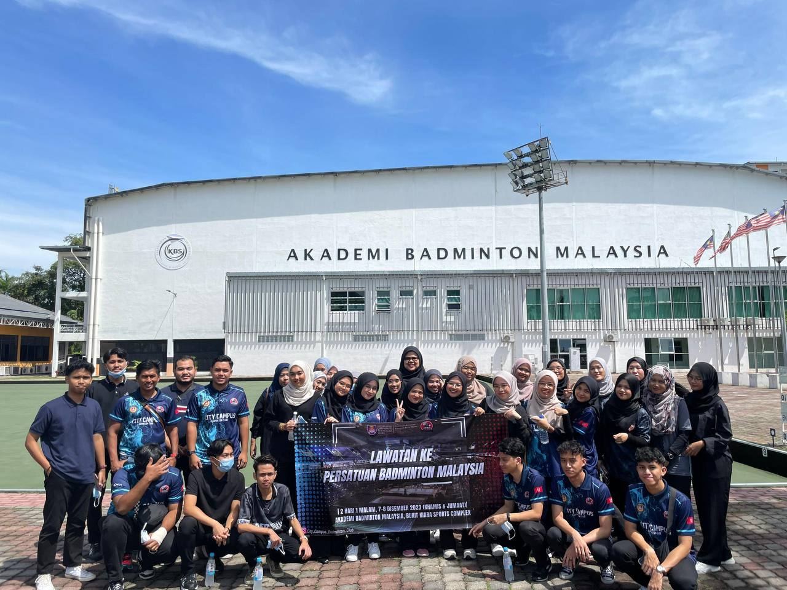
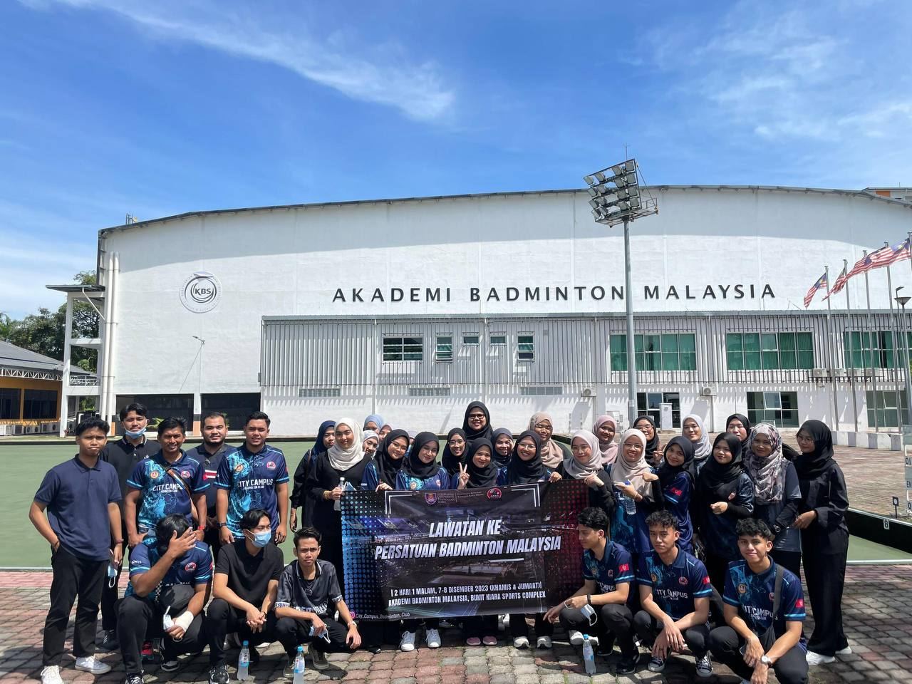

I start working in Unifield Company for my internship to complete my diploma year back then in 2021 and I got assigned as a human resource assistant manager. I worked as an intern at the company for about 4 months. Back then when there were Movement Control Order (MCO) because of Covid 19 pandemic, hence i have to work remotely from home until i finished my internship. It was such a tough yet bearable journey of my internship. I learned and discover a lot of new things even though it is not that long of experience. The company is located at Seremban, Negeri Sembilan and its operating is spesifically in handling the intake of students for Unifield International College.


Because of UBM599, I began using the freelancer and upwork platform this year. These two platform is technically the same. I found this platform to be quite fantastic at first because it allows us to search and do tasks online. I make an effort to bid for variety of jobs, including data entry, logo designer, copywriter and many more. I have to apply to a lot of jobs based on my experience, and the positions that I apply for must be within my skills. First and foremost, allow me to briefly describe about Freelancer and Upwork platform here: Firstly, employers and workers can connect on Freelancer, an online marketplace. Those platforms strictly warned the freelancer that seek for job to not communicate with the recruiters outside the platform to prevent them to get scammed. The recruiters, or the employers need to post their job task on the Freelancer and workers can start bid the job. Members can host and participate in competitions on the website with the possibility to win cash prizes. In addition to creating and receiving ratings of the individuals they work with or for, freelancers and employers also build profiles on the website as they submit, accept, and finish work.
Finceptive is an official campus club that specifically build for BBA Finance student. Our club advisor is Sir Wan Yusrol Rizal bin Haji Wan Yusof. I applied to be a member of the club when i was in semester 3 and i have been going through an interview session before i got accepted to be one of their member. This club is very useful and giving me a lot of opportunity to build myself as a person and also helpful to my career in the future. When i first accepted into this club, i got appointed to be an emcee for a program with junior BBA Finance students. It was very overwhelming and nerve-wrecking. On 25th October 2023, i was selected to be a program director of Meet and Greet program with BBA Finance new intake students. It was the very time of me directing a big program and also delivering speech in front of the audience. Thanks to that experience, i learned a lot and gain many new useful things in life. Then, on 13th December, in an Annual Grand Meeting with BBA Finance student, i got appointed as one of the High Council in Finceptive Club. What can i say, it was worth all the effort i put on before this. The other thing that i am so grateful all along is that all of the members in the club are very friendly and also professional in doing their job. No words can describe how grateful i am to be chosen as the member of the club.
 

City Campus Badminton Club, or CCBC, is one of the sport club in UITM Kota Bharu. I applied to join this club because of my deep interest in watching badminton game and also to gain new experience in handling sports as well. On the last 7th December, we visited The Badminton Association of Malaysia or BAM. That was my first time visiting the place and i got the opportunity to meet the famous and top Malaysia doubles badminton player, Aaron Chia and Soh Wooi Yik. Since i only watch them on screen, watch them in reality seems so unreal, and just like a dream! Plus, we also got the opportunity to watch the Malaysia Badminton trainees training in their court. It was indeed such a golden experience to me.